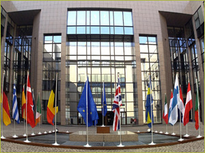

| Governments have a variety of reasons for intervention. In general they either want to prevent undesirable and stimulate desirable developments. Policies are executed in many ways, on many issues and on different scale levels. In Eururalis only policies that more or less directly impact on rural areas and its land-use are taken into consideration. Also these policies are limited to those that have an EU wide basis. The focus is therefore on policies such as: the Common Agricultural Policy (CAP), the international agreements on nature protection, policy (Natura 2000, Birds and Habitat Directive) on protection of the environment and health (Nitrates Directive, Water Framework Directive) and the EU policy to stimulate the implementation of Bio-energy. |  |
For many policies series of assumptions have been made within the storylines
of the four scenarios. Nevertheless, within a scenario sometimes more future
options for the same policy theme are possible. Eururalis provides four so called
policy buttons. Within the storyline policy packages can be chosen interactively.
By doing so the scenario is adjusted in a desirable way and the differences
on impact on several indicators can be explored. In a way a large number of
sub-scenarios are created.
In Eururalis there will be four policy buttons available:
For each policy button three or four packages with discernable strategic policy
measures are developed. The policy packages are the result of discussions with
the Eururalis Policy Advisory Group. In future possible other policy buttons
might be added, like for instance extension of the Rural Development Policy
or policies on water, environment and nature.
A detailed explanation of the four policy buttons is given in separate sheets
under 'about policy'.